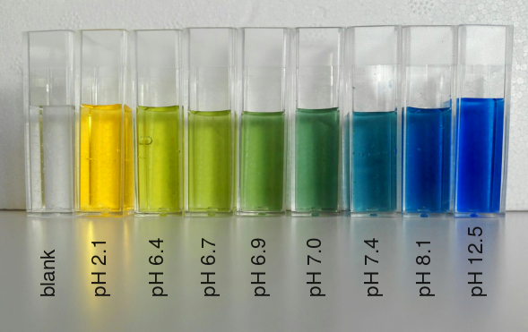

BTB 용액(브로모티몰블루) (Bromothymol Blue Solution)
검수 완료

| # | 원문 | 한국어 |
|---|---|---|
| 1 | blank | 바탕 용액(지시약 없음) |
쉽게 풀면
BTB 용액은 용액의 산성도(pH)에 따라 색이 노란색, 초록색, 파란색으로 바뀌는 지시약이다. 산성에 가까우면 노란색, 중성 부근에서는 녹색을 띤 파란색, 염기성에 가까우면 파란색을 띠는데, 이는 분자 구조가 pH에 따라 형태를 바꾸면서 빛을 흡수하는 파장이 달라지기 때문이다. 눈으로 색 변화를 쉽게 관찰할 수 있어 별도의 측정 장비 없이도 대략적인 산성도 변화를 확인할 수 있다. 특히 물에 이산화탄소가 녹으면 약한 산성을 띠게 되므로, 이산화탄소의 존재 여부를 색으로 간접 확인하는 데 자주 활용된다.
왜 중요한가
식물의 광합성과 호흡 과정에서 이산화탄소의 발생과 소비를 시각적으로 보여줄 수 있어 생물 교육 및 연구 실험에서 매우 널리 쓰이는 지시약이다. 물속 이산화탄소 농도가 변하면 물의 pH도 함께 변하기 때문에, BTB 용액의 색 변화를 관찰하는 것만으로도 광합성이 활발한지 호흡이 우세한지를 직관적으로 판단할 수 있다.
무엇이고 어디서 작용하나
브로모티몰블루(BTB)는 pH가 7 근처인 용액을 잴 때 쓰는 산염기 지시약이다. 변색 범위는 pH 6.0~7.6이며, 산성 용액(양성자가 붙은 형태)에서는 노란색, 염기성 용액(양성자가 떨어진 형태)에서는 파란색, 중성에서는 녹색을 띤 파란색이다. 아주 강한 산성에서는 자홍색을 띤다. 산해리상수 pKa는 7.0으로 소개된다. 지시약은 약한 산이나 약한 염기로, 산 형태와 짝염기가 다른 색을 띠며 변색 범위는 대략 pKa±1이다.
시판품은 대개 나트륨염 형태이다. 티몰블루를 빙초산에 녹이고 브롬을 더해 만든다.
주요 기능과 기전
물에 이산화탄소가 녹으면 탄산이 생겨 pH가 내려가므로, BTB 색이 파란색 쪽에서 노란색 쪽으로 바뀌는 것으로 이산화탄소의 존재를 간접적으로 확인한다. 광합성은 용액의 이산화탄소를 줄여 pH를 올리고, 호흡은 이산화탄소를 내어 pH를 내리므로, 색 변화만으로 어느 쪽이 우세한지 가늠할 수 있다.
학교 실험 시연 외에도 생물 표본의 염색제로 쓰이고, 산과 영역에서는 양막 조기 파수를 확인하는 데 쓰인다.
연구에서 다루는 방식
방법 절에는 BTB의 농도, 용액의 초기 색(초기 pH), 측정 시각을 적는다. 색 판독은 눈으로 하면 정성적이고, 분광 측정으로 흡광도를 재면 정량적이다. 변색 범위가 pH 6.0~7.6에 한정되므로 이 범위를 벗어나는 용액에서는 색이 변하지 않아 지시약으로 쓸 수 없다.
GHS 표시는 주의(Warning)이며, 삼키면 해롭고(H302) 피부 자극(H315)과 심한 눈 자극(H319)이 있으므로 보호구를 착용하고 다룬다.
논문에서는 이렇게 쓰입니다
실제 논문에서
국내 학술지 논문에서 이 용어가 쓰인 문장을 그대로 옮겼다. 제목·학술지·연도와 원문 링크를 함께 적었다.
“본 연구는 초록색 관찰을 가능하게 하는 산과 염기 및 지시약의 농도 조건을 제시하고, UV-Vis 분석법을 바탕으로 종말점과 이론적 중화점 간의 오차를 최소화하는 BTB 용액의 초록색을 제안하고자 한다.”
강산과 강염기의 중화 반응에서 BTB 지시약 색 변화 관찰의 한계점 분석 및 개선 방안 제안, 현장과학교육, 2024 · KCI 한국학술지인용색인 · 원문 보기 ↗
“이 연구의 목적은 BTB 용액을 사용한 광합성 실험에서 BTB 용액의 변색 과정과 관련하여 ’광합성' 실험의 문제를 살펴보고, 이를 개선하기 위한 자료를 제공하는 것이다.”
광합성 실험에서 BTB 용액의 변색에 대한 교과서 분석 및 예비 교사의 화학적 이해 조사, 교원교육, 2013 · KCI 한국학술지인용색인 · 원문 보기 ↗
예시 문장
아래 예문은 용어의 쓰임을 보이려고 만든 것으로, 실제 논문 문장이 아니다.
색이 변하는 정도를 보고 광합성이 얼마나 활발한지 짐작했다는 뜻이다.
이산화탄소가 쌓이는 속도로 호흡 활동의 정도를 비교했다는 의미이다.
조금 더 깊게 보면
BTB는 대략 pH 6.0에서 노란색, pH 7.6 이상에서 파란색으로 변하는 변색 범위를 가지고 있어 약산성에서 약염기성 사이의 변화를 관찰하는 데 적합하다. 시약은 보통 에탄올에 녹인 원액을 물로 희석해 사용하며, 빛과 미생물 오염에 노출되면 색 안정성이 떨어질 수 있어 밀폐 용기에 보관하는 것이 좋다.
주의할 점
일반적인 사용 농도에서는 독성이 낮은 편이지만, 원액은 피부나 눈에 자극을 줄 수 있으므로 직접 접촉을 피하고 사용 후 손을 씻는 것이 좋다. 장기간 빛에 노출되면 변색될 수 있어 갈색병에 보관하는 것이 좋다.
헷갈리기 쉬운 용어
| 용어 | 무엇인가 | 차이 |
|---|---|---|
| pH 지시약 | pH에 따라 색이 변하는 물질의 총칭 | BTB는 중성 근처에서 변색하는 지시약이다 |
참고 문헌
- Wikipedia contributors. (n.d.). Bromothymol blue. In Wikipedia, The Free Encyclopedia.
- Wikipedia contributors. (n.d.). PH indicator. In Wikipedia, The Free Encyclopedia.